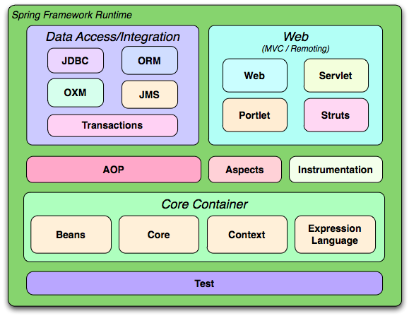

Spring

Spring Framework
Spring Framework is a Java platform that provides comprehensive infrastructure support for developing Java applications, is an alternative to JEE.
Spring framework is a collection of framework libraries introduced by Rod Johnson in 2003.
Benefits
Dependency Injection: Is a useful feature for object dependencies management, it is just elegant, highly flexible and facilitates maintainability, especially in large Java project. Favors “loose coupling”.
A POJO (Plain Old Java Object) is a regular Java object, not bound by any special constraints that are not enforced by the Java language specification and do not require any class path. For Java programmers it serves to emphasize the use of simple classes that do not depend on a particular framework. POJOs are used to increase the readability and reusability of a program.
Minimize boilerplate code.
Simplifies data access JDBC. (…)
AOP (Aspect Oriented Programming) (…)
Modules

Spring Projects
- Spring Data - Collection of projects for persisting data to SQL and NoSQL databases
- Spring Cloud - Tools for distributed systems
- Spring Security - Authentication and Authorization
- Spring Session - Distributed web application sessions
- Spring Integration - Enterprise Integration Patterns
- Spring Batch - Batch processing
- Spring State Machine - Open Source State Machine
Spring Boot
Spring Boot is an extension or module built on the Spring framework.
Provides the ability to create, standalone Spring applications that can just run immediately without the need for annotations, XML configuration, or writing lots of additional code.
Benefits
Spring Boot gives an easier, quicker path to set up, configure, and run apps. It eliminates the heavy lifting of configuration that is required for setting up most Spring-based apps. Developers can jump right in and use Spring Boot without ever having to learn the underlying Spring framework.